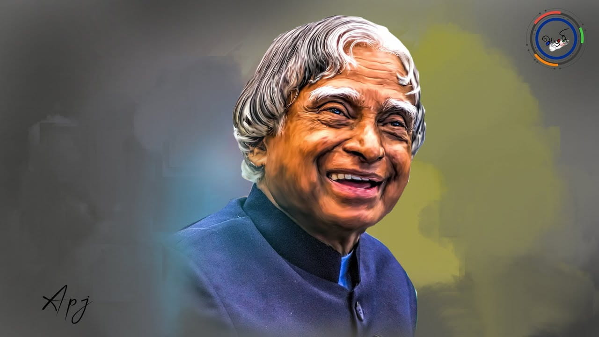

APJ Abdul Kalam
1931-2915
Biography
A.P.J. Abdul Kalam, in full Avul Pakir Jainulabdeen Abdul Kalam,
(born October 15, 1931, Rameswaram, India—died July 27, 2015, Shillong),
Indian scientist and politician who played a leading role in the development
of India's missile and nuclear weapons programs.
He was president of India from 2002 to 2007.